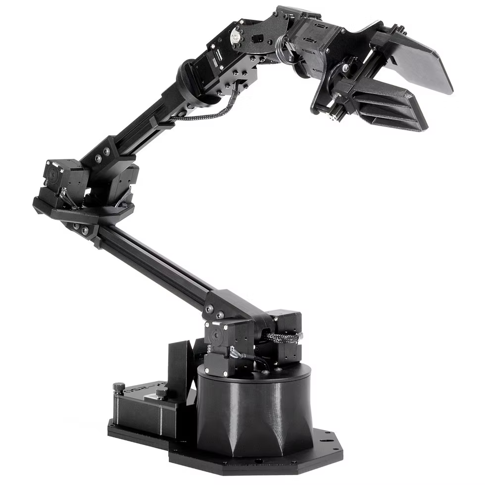
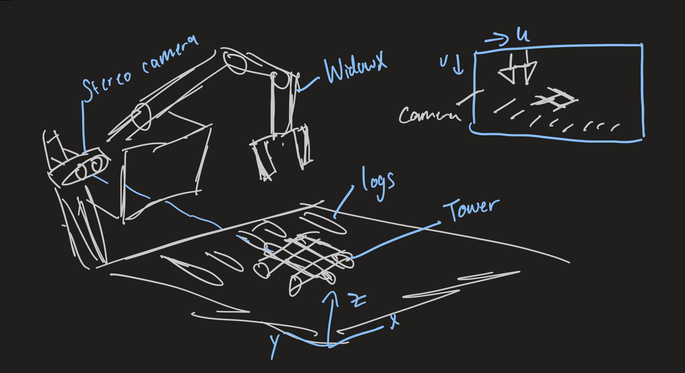
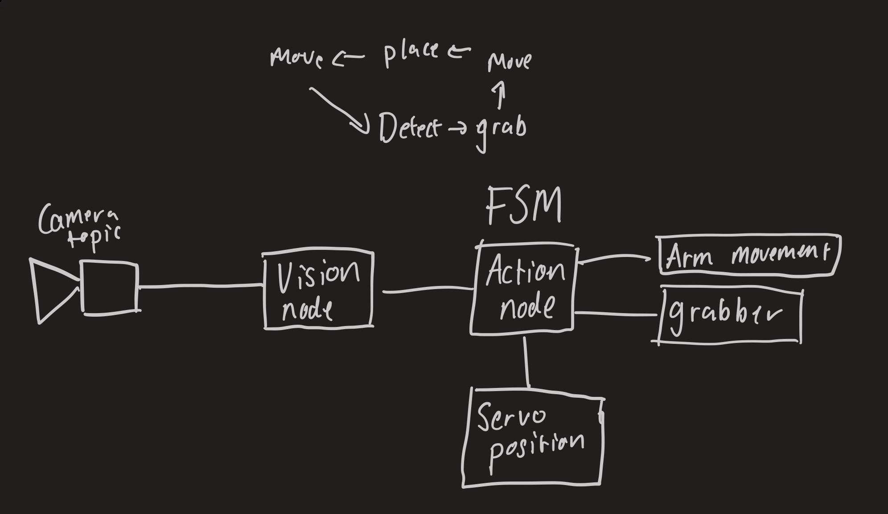
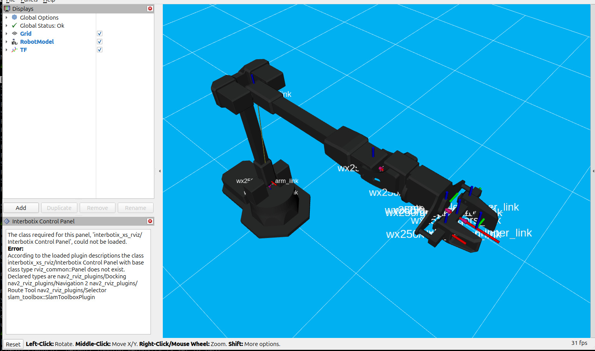

Overview
We plan to use the WidowX arm by Trossen Robotics as well as machine vision strategies to localize our robot in 3d space. We will then use the arm to pick up and place Lincoln Logs to build a small tower, and then finally place the roof on top.

Below is a sketch for our plan and our setup. The camera will likely be a Zed2I depth camera which will allow us to track our progress on the tower, as well as where the next log to pick up is.

System

Progress
We are working to get the simulation functional, and we have managed to get a proof of concept of the arm functioning, which includes the ability to pick up and place logs and the roof with teleop, with a demo video below.

Team
- Sako
- Akil
- Duc
- Siddhant